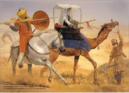
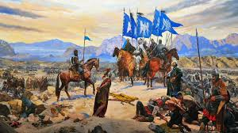
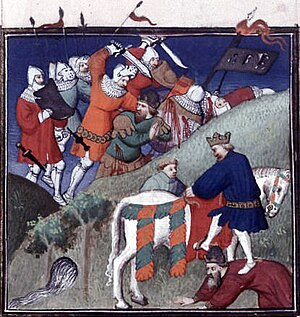

11. Yüzyıl: Selçuklu Yükselişi
1038 Nişabur'un Fethi

Selçukluların İlk Büyük Zaferi
1038 yılında Selçuklu Türkleri, Gaznelilere karşı Nişabur’u ele geçirdi. Bu zafer, Selçuklu Devleti'nin ilk büyük başarısı olarak tarihe geçti ve Selçukluların bölgedeki etkinliğini artırdı. Tuğrul Bey, burada kendi adını taşıyan hutbe okutmuş ve bağımsızlığını ilan etmiştir. Nişabur, Selçukluların siyasi merkezi olarak önem kazanmıştır.
1040 Dandanakan Savaşı

Selçukluların Bağımsızlık Savaşı
1040 yılında yapılan Dandanakan Savaşı, Selçukluların Gazneli ordusunu yenilgiye uğrattığı ve bağımsızlığını tam anlamıyla kazandığı dönüm noktasıdır. Bu zaferin ardından Büyük Selçuklu Devleti resmen kurulmuş ve Tuğrul Bey sultan ilan edilmiştir. Orta Asya’daki Türk siyasi birliği güçlenirken, Selçuklular hızla batıya doğru genişlemeye başlamıştır.
1055 Bağdat Seferi
Abbasi Halifeliği'nin Korunması
1055 yılında Büyük Selçuklu Sultanı Tuğrul Bey, Abbasi Halifeliği’ni koruma altına almak için Bağdat’a bir sefer düzenledi. Bu sefer sırasında Şii Büveyhoğulları'nın egemenliğine son verilmiş ve Selçuklular İslam dünyasında dini liderlik konumuna yükselmiştir. Tuğrul Bey, Abbasi Halifesi Kaim Bi-Emrillah tarafından “Doğu ve Batının Sultanı” ilan edilmiştir.
1071 Malazgirt Meydan Muharebesi

Anadolu'nun Kapılarının Türklere Açılması
1071 yılında Büyük Selçuklu Sultanı Alparslan, Bizans İmparatoru IV. Romanos Diogenes'i yenerek Anadolu’nun kapılarını Türklere açtı. Malazgirt Zaferi, Anadolu’daki Türk-İslam medeniyetinin temellerinin atıldığı ve Türkler için yeni bir yurt oluşturulduğu önemli bir dönüm noktasıdır. Bu zafer, İslam dünyasında büyük bir heyecan uyandırmış ve Haçlı Seferleri'nin başlamasına zemin hazırlamıştır.